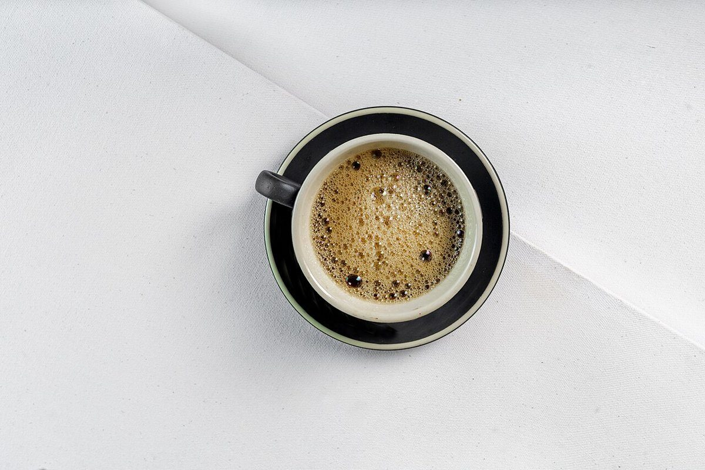

制作側の連想
真空蒸着装置を、配置図にしてみる
このサイトは、容器の中で材料を熱して板に薄い膜をつける装置を、図にしたつもりで作りました。六つの部位に番号をふり、上の図と並べています。制作側の連想で、お店の理念・由来とは無関係です。実際の装置の仕様を示すものでもありません。
凡例
六つの部位
- 1ベルジャー釣鐘の形をした、ふた役の透明な容器。中の空気を抜く空間になる。
- 2基板ホルダー膜をつけたい板を、容器の天井側で下向きに支える台。
- 3シャッター蒸気の通り道をふさいだり開けたりする、動く板。
- 4蒸発源材料をのせて熱する小さな舟形の皿。熱でとけた材料が蒸気になる。
- 5膜厚モニターどれだけ膜がついたかを、はかるための小さなセンサー。
- 6排気口容器の底にあいた、空気を抜くための口。ポンプへ管がつながる。
写真(イメージ)
カップとコーヒーの写真


写真はコーヒーのイメージです。お店のものではなく、お店で提供している商品を示すものではありません。
ギャラリー(イメージ)
パンとコーヒー豆の写真


写真はパンとコーヒー豆のイメージです。お店のものではなく、お店で提供している商品を示すものでもありません。
ご案内
お店のこと(確認できたものだけ)
| 所在地 | 〒854-0621 長崎県雲仙市小浜町雲仙372 |
|---|---|
| 電話 | 準備中 |
| 営業時間 | 準備中 |
| 定休日 | 準備中 |
| ご予約 | 準備中 |
| 駐車場 | 準備中 |
| SNS | Instagram @kumononaka.0828 |